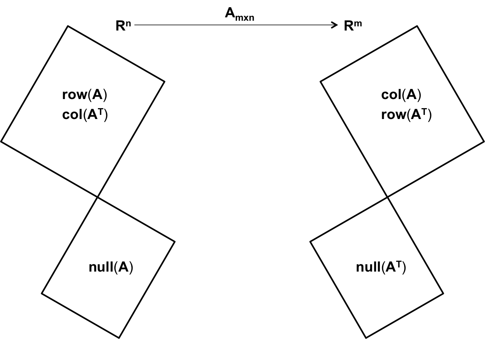

Computing for Data Sciences
Welcome to the Fall 2016 edition of the course
Computing for Data Sciences (CDS), aka BAISI-4, is one of the five courses offered at ISI Kolkata during the First Semester of the PGDBA program. The Fall 2016 edition of the course -- CDS 2016 -- is taught by Sourav Sen Gupta from R C Bose Centre, Indian Statistical Institute, Kolkata.
Reach Sourav : sg.sourav@gmail.com | +91 94323 44852 | Room 404, Deshmukh Building
Lectures
We have time for about 28 two-hour lectures during Fall 2016 -- that's a whopping 56 hours! We will try to distribute this time carefully between Classroom Lectures (about 36-40 hours), Invited Talks (about 8 hours), and Interactive Sessions (about 8-12 hours) -- as required for the course.
The basic outline of the Classroom Lectures, and all relevant references and resources will be posted regularly on this website. The corresponding lecture notes will be authored and posted by the students taking the course -- in the form of blog articles -- at the CDS 2016 Lecture Notes blog.
First Half (Pre Mid-Sem) : 12 Lectures
We discussed the format for the course, and the administrative issues thereof. Format for the groups were specified for assignments and the term-project, and the resources residing on the CDS website were pointed out. The computing platform and requirements for the course was defined as well, and installation of
We discussed the primary goal of the course -- to understand the fundamental notions of
Homework : Plot $f(n)$ against $n$ for various functions $1, 2, 1000$; $\log(n), 2\log(n), 1000\log(n)$; $n, 2n, 1000n$; $n^2, 2n^2, 1000n^2$; $n^3, 2n^3, 1000n^3$; $2^n, 3^n$; etc., and try to observe patterns of clustering, if any, for large values of $n$.
We continued our discussion on the basic notions of
We took a few examples -- addition and multiplication of two numbers (where $n$ is the maximum bitsize of the input numbers), finding the maximum or minimum in a list of numbers (where $n$ is the size of the list), sorting a bunch of playing cards (where $n$ is the number of cards), multiplication of a matrix to a vector (where $m \times n$ are the dimensions of the matrix) -- to illustrate various time complexities.
Reading : Chapter 3 of "Introduction to Algorithms" (by Thomas H. Cormen, Charles E. Leiserson, Ronald L. Rivest and Clifford Stein)
Computational Complexity (CS50) | Asymptotic Notation (CS50) | Complexity Cheatsheet
We motivated the
We tried to analyze the action of a matrix on a vector during multiplication, and figured that an $m \times n$ matrix defined over the reals ($\mathbb{R}$) generally
In fact, we observed that if we decompose a square matrix into its
We noted that the action of $M$ on a vector $v$ can be naturally decomposed as $Mv = (V \Lambda V^{-1}) v$, which is a three-step process where $V^{-1}$ and $V$ take care of two steps of rotation (being orthonormal matrices), and $\Lambda$ takes care of the entire scaling. We hinted that such a decomposition is possible for any $m \times n$ matrix; it is called the
Reading : Lectures 1, 2, 3 of "Linear Algebra" by Gilbert Strang (link) | "Geometric Review of Linear Algebra" by Simoncelli (link)
Linear Algebra (Gilbert Strang) | Fibonacci and Eigenvalues (Anstee) | Linear Algebra Review (Savov)
In this lecture, we tried to view an $m \times n$ matrix as a
It seemed quite natural to look at the $n \times m$ matrix $A^T$ as a
Next, we viewed the operation of the matrix $A$ on a vector $v \in \mathbb{R}^n$ as a collection of
In effect, we identified four subspaces for the $m \times n$ matrix $A$ in this lecture -- the

Reading :
Paper 1 and Paper 2 by Gilbert Strang | "Geometric Review of Linear Algebra" by Simoncelli (link)
Homework : Determine the dimensions of all the four subspaces identified in this lecture, and find their relationship with $m$ and $n$.
Linear Algebra (Gilbert Strang) | Paper 1 (Gilbert Strang) | Paper 2 (Gilbert Strang) | Linear Algebra Review (Savov)
Introduced
Introduced the
Discussed the
Discussed the
Discussed the
Introduced the notion of
Introduced the notion of
This was a Lab Session, involving hands-on application of linear models and tree-based models to a dataset. Discussed
Mid-Semester Examination
On 22 September 2016, we had our Mid-Semester Examination for the course. It was a (roughly) six-hour Hackathon, targeted towards the comprehensive EDA and Multiple Regression Analysis of a given dataset (private, non-shareable). It was a Kaggle-like group competition.
Second Half (Post Mid-Sem)
Discussed (recap) various notions of distance, and introduced the concept of
Introduced the concept of
We had a wonderful guest lecture by Bodhisattwa, Robin, Ayan and Jayanta (from the PGDBA senior batch), introducing the concept of
Discussed the concept of
Projects
Adequate weightage will be reserved in the End-of-Semeseter evaluation (50%) for the Term Project. Each group is supposed to deliver a Project Presentation (30 mins per group), including a Q&A session (10 mins per group), and a Project Report (theory/code) in the form of a blog-article.
Each group is at the liberty of choosing the topic for their Term Project. However, the Project chosen by each group must be approved by Sourav before they may be executed. Potential choices for the term projects may be one from this list of suggested topics, a substantial extension of one of the projects from CDS 2015, or any other practical and/or theoretical project relevant to the course, upon mutual agreement with Sourav.
The last date for finalizing the topic for your project is 7 October 2016. Project presentations will be scheduled on 2 and 3 December 2016.
Information
Course : BAISI-4 (aka CDS)
Tuesday & Thursday @ 11:00 - 13:00
Assignments + Lecture Scribes = 20%
Mid-Sem Exam = 30% | Hackathon
End-Sem Exam = 50% | Term Project
Assignments
Assignments constitute 20% of the total marks, including group scribing for lecture notes (approx. 5%).
Assignment 1
To be posted. May be on Programming.
Assignment 2
To be posted. May be a Competition.
Groups
- 01 : Deepanshu, Himanshu J., Palash, Parag
- 02 : Vushesh, Anshuman, Srikant, Subhodeep
- 03 : Deepesh, Gunja, Ishita, Sumit
- 04 : Swapnika, Sakshi, Shrey, Mahesh Babu
- 05 : Deep, Adhi, Harsh, Vyankatesh
- 06 : Apoorva, Saurabh, Khushiram, Neetesh
- 07 : Prem, Tapas, Kaustubh, Sasank
- 08 : Prakhar, Yashas, Waqar, Shivam
- 09 : Sidharth, Mukul, Yogesh, Sudhakar
- 10 : Ajit, Anushree, Kapil, Rahul
- 11 : Abhilash, Apoorv, Dhrubajyoti, Neha
- 12 : Gaurav, Himanshu G., Naveen, Mahesh
- 13 : Pruthvi, Chandra Mouli, Ranjit, Sandeep